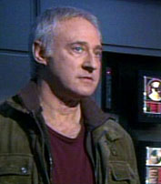
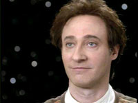
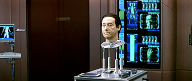
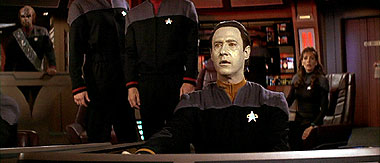
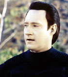
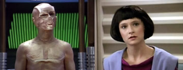

|

Clique
aqui para visitar o
Acervo de colunas


| Laços
de família
Independente das diretrizes, esporadicamente tínhamos algum episódio voltado à família dos personagens. Conhecemos a mãe de Deanna, os pais adotivos de Worf, o irmão de Picard... e, claro, a família de Data. Pode um andróide ter família? Se o andróide em questão for Data, que chegou até mesmo a criar uma filha para si, podemos dizer que sim. Nesta família se enquadram seus “irmãos” (B-4 e Lore), bem como Lal, a filha por ele construída. Além disso, dada a relação de Data com o Dr. Noonien Soong, seu criador, marcada por forte senso de lealdade, podemos dizer que Soong seria seu pai – e, por conseqüência, todos os seus ancestrais podem ser considerados, também, ancestrais de Data. Uma família estranha, talvez mesmo bizarra, cheia de conflitos. E, por isso mesmo, não tão estranha e bizarra assim. Dr. Arik Soong  Arik é um geneticista que acreditava que o ser humano poderia ser melhorado. Independente das lições aprendidas pelos seres humanos durante as Guerras Eugênicas, Soong roubou embriões de humanos geneticamente aperfeiçoados, levando-os a um planeta onde foram criados e educados por Soong – até ele ser preso pelo roubo. Vinte anos depois, estes mesmos humanos geneticamente modificados conseguem roubar uma nave klingon, resgatando Soong e roubando outras centenas de embriões restantes das Guerras Eugênicas que estavam armazenados na Cold Station 12, uma estação espacial. O processo quase gerou uma guerra entre a Terra e os Klingons, e resultou na morte dos “filhos de Soong” e na destruição de todos os embriões. Apesar de seu comportamento criminoso fica claro, porém, que as intenções de Soong não eram totalmente ruins. Seu único objetivo era melhorar a espécie humana, eliminando doenças e sofrimentos. Soong demonstrou possuir grande respeito pela vida como um todo – ao defender a vida dos cientistas da estação onde os embriões estavam armazenados, bem como lutar para que seus “filhos” não disparassem uma bio-arma contra um planeta klingon. Ao voltar para a prisão, após todo o ocorrido, Soong alegou não mais acreditar ser possível melhorar o ser humano, prometendo voltar seu intelecto para a robótica. Mais
informações sobre Arik Soong: “Borderland”,
“Cold Station 12” e “The Augments”,
todos episódios da quarta temporada de Enterprise.  Soong
se casou com a também cientista Julianna O'Donnell em 2328. Com a ajuda
de sua mulher, ele conseguiu criar três andróides, até que
Julianna faleceu em um acidente do laboratório. Inconsolável, Soong
criou uma replica robótica, com todas as memórias de sua esposa.
Tal andróide não possuía conhecimento de sua natureza, e
posteriormente se separou de Soong e se casou novamente com outra pessoa. Soong acabou morrendo nas mãos de uma de suas criações – ou “filhos”, quando Lore, andróide defeituoso dotado de emoções, o matou em um ataque de fúria. Mais informações sobre o Dr. Noonien Soong – “Brothers”, da quarta temporada de A Nova Geração, e “Inheritance”, da sétima temporada. B-4  Data  Existem
muitas informações registradas sobre Data, dada sua notoriedade
ao fazer parte da tripulação da Enterprise de Jean Luc Picard –
tanto a NCC-1701-D quanto a NCC-1701-E. Não se sabe ao certo quando Data
foi construído, a única informação conhecida é
a de que Data foi o penúltimo modelo desenvolvido por Soong e sua então
esposa Julianna. Suas partes foram encontradas por membros da tripulação
da USS Tripoli, pouco após o ataque da Entidade Cristalina, na colônia
científica de Omicron Theta, onde foi montado definitivamente em 2338. Episódios essenciais sobre Data: “Datalore”, “The Measure of a Man”, “The Offspring”, “The Most Toys”, “Brothers”, “Data’s Day”, “In Theory”, “Hero Worship”, “The Quality of Life”, “Inheritance”, e os filmes “Jornada nas Estrelas – Generations”, “Jornada nas Estrelas – Primeiro Contato” e “Jornada nas Estrelas – Nêmesis”. Lore  Após ser remontado, ele foi responsável pela morte de todos os colonos de Omicron Theta, e mostrou-se extremamente perigoso em todos os seus encontros com Data. Em 2368, conseguiu localizar o Dr. Soong, roubando o chip de emoções criado para Data e matando seu criador. Chegou a criar, em 2371, uma facção de Borgs dissidentes, ação esta que levou à sua destruição, em 2371, quando alguns destes Borgs se rebelaram contra ele. De seu corpo desativado e desmembrado, foi recuperado seu chip de emoções, que posteriormente seria utilizado por Data. Mais
informações sobre Lore: “Datalore”,
“Brothers”,
“Descent Partes I e II”.  Filha de Data, Lal foi construída por este em 2366, baseando-se em sua própria programação. O resultado final, porém, foi superior ao de seu criador, quando Lal passou a experimentar emoções como amor, medo e tristeza. Por escolha própria, decidiu possuir um corpo feminino, ao contrário do pai, e assumiu um posto de garçonete no Ten-Foward, trabalhando em contato com Guinan. A vida de Lal, porém, foi bem curta. Pouco após assumir suas funções no Ten-Foward, Lal sofreu uma falha geral de sistema causada por uma extrema e curta variação de emoções. Apesar das tentativas de Data, os reparos não foram possíveis. Por fim, Data transferiu as memórias de Lal para seu próprio cérebro. Mais
informações sobre Lal: “The Offspring”.
Como
pode se ver, apesar de suas características, A Nova Geração
foi bem eficaz ao retratar as histórias da família Soong. Uma família
bizarra, onde a maior parte dos membros conhecidos são andróides,
mas ainda assim estranhamente humana, com conflitos entre pai e filhos, entre
irmãos, com amor fraternal, inveja e ódio. Uma família bizarra,
mas tipicamente humana. |
 Se
há algo que pode ser dito sobre Jornada nas Estrelas – A
Nova Geração é que o desenvolvimento dos laços
familiares dos personagens nunca foi o seu forte. Tal fato é conseqüência
das diretrizes estipuladas por Gene Roddenberry, ainda na criação
da série: a relação entre os personagens principais deveria
ser como o de uma família norte-americana, criando-se assim uma identificação
entre os espectadores. Claro que era uma família “perfeita”,
já que outra das diretrizes de Gene era que não existisse conflito
entre seus personagens...
Se
há algo que pode ser dito sobre Jornada nas Estrelas – A
Nova Geração é que o desenvolvimento dos laços
familiares dos personagens nunca foi o seu forte. Tal fato é conseqüência
das diretrizes estipuladas por Gene Roddenberry, ainda na criação
da série: a relação entre os personagens principais deveria
ser como o de uma família norte-americana, criando-se assim uma identificação
entre os espectadores. Claro que era uma família “perfeita”,
já que outra das diretrizes de Gene era que não existisse conflito
entre seus personagens...